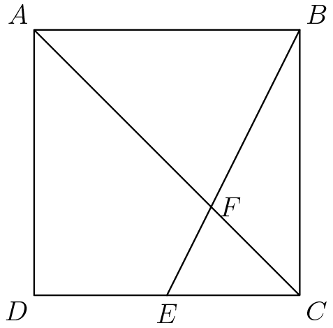
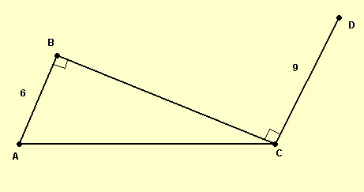

Algebra
For when quadratic ax2 + bx + c = (x + r1)(x + r2)
r1 + r2 = c/a
r1r2 + r1r3 + r2r3= c/a
r1r2r3 = -d/a
Simon's favorite factoring trick: Quadratic Formula

MESH Education
AMC 10/12 PREP
For when quadratic ax2 + bx + c = (x + r1)(x + r2)
Two triangles are similar if and only if two angles are congruent(AA~) or all three corresponding sides have equal ratios(SSS~) or two pairs of corresponding sides have the same ratios and the angle in between the two sides are equal.
Two triangles are congruent if and only if the ratios discussed in Similar Triangles are the same.
"For every right triangle the sum of the squares of the legs is equal to the square of the hypotenuse.
For example, the two legs of a right triangle are 3 and 4 and the hypotenuse of the right triangle is 5. The sum of 9 (32) and 16 (42) is 25 (52).
Trigonometry:
Sine: sin A = side opposite of angle/longest side of the triangle
Cosine : cos A = side next to the angle (not the longest side)/longest side of the triangle
Tangent : tan A = side opposite of angle/side next to the angle (not the longest side)
"Trigonometric Ratios
Sine A: sin A = a/c
Cosine A: cos A = b/c
Tangent A: tan A = a/b
Sine B: sin B = b/c
Cosine B: cos B = b/c
Tangent B: tan B = b/a
Law of Cosines: c2 = a2 + b2 - 2ab cos(C)
Law of Sines: (a / sin A) = (b / sin B) = (c / sin C)
Stewarts theorem: Let a, b, and c be the lengths of the sides of a triangle. Let d be the length of a cevian to the side of length a If the cevian divides the side of length a into two segments of length m and n with m adjacent to c and n adjacent to b, then Stewart's theorem states that
pb2m+c2n = a(d2+mn)"
Basic counting example: How many numbers are between 16 and 25, inclusive? Soln: there are (25 - 16) + 1 = 10 numbers between 16 and 25. Or: How many numbers are between 16 and 25, EXCLUSIVE?t Soln: there are (25 - 16) - 1 = 8 numbers between 16 and 25. To check: (17, 18, 19, 20, 21, 22, 23, 24)
Probability is defined as number of cases that an event can happen divided by the total number of outcomes. In other words, how likely an event is to happen.
Complementary counting is defined as counting what you DON’T want and subtracting it by the total amount of possibilities to get what you DO want.
(Example: How many three digit numbers contain the digit "9" at least once?
There are 8 x 9 x 9 = 648 numbers that do not contain the digit "9". The answer is 900 - 648 = 252.)
Permutation:
A combination is a selection of items from a set, in which the order does matter.
(nPr) which is n! divided by the quantity of (n-r)!
Combination:
A combination is a selection of items from a set, in which the order does not matter.
(nCr) which is n! divided by the quantity of (n-r)!r!
Theorems:
Stars and Bars:
The number of ways to write n as an (ordered) sum of k positive integers is n − 1 choose k − 1 .
Imagine a line of stone. Then imagine have n number of sticks. To find the total nummber of possible separations of the stones is to
to find the number of gaps between the stones choose the number of sticks.
Number theory is the study of the set of Natural Numbers, or Counting Numbers.
Primes: Prime numbers are numbers that are only divisible by one and itself. Examples: 2, 3, 5, 7, 11, 13
Number bases: Number bases are methods of counting the numbers but with only a certain amount of numbers. Base 10 (Decimal) is our standard counting system, using the numbers 0-9 to represent all numbers.
Example: base two (binary) counts using only 0s and 1s. 1, 10, 11, 100 would be 1, 2, 3, 4 in base 10. Base two is used in computers. Also, base 16 (hexadecimal) counts using numbers 0-9 and letters A-F. 10 in base 10 would be A in base 16 and 15 is F. 16 in base 10 would be 10 in base 16. Hexadecimal is used in mac addresses and color codes (#000000 (black) ~ #FFFFFF (white))
3: Add up the digits, if they add to a multiple of 3, then the number is divisible by 3.
4: If the last two digits of the number are divisible by 4, then it is divisible by 4.
5: If the number ends in 5 or 0, it is divisible by 5.
6: if the number is divisible by 2 and 3, it is divisible by 6.
8: If last three digits are divisible by 8, then the number is divisible by 8.
9: Similar to 3 (add the digits), but if they add to a multiple of 9, then it is divisible by 9.
10: If number ends in 0, it is divisible by 10.
11: Add the alternating digits. Then add the other alternating digits. Then if the difference of the sums is 0, it is divisible by 11
1. A 25 foot ladder is placed against a vertical wall of a building. The foot of the ladder is 7 feet from the base of the building. If the top of the ladder slips 4 feet, then how much will the foot of the ladder slide?(AHSME)"
2. What is the remainder when x51+51 is divided by x+1
3. Point E is the midpoint of side CD in square ABCD and BE meets diagonal AC at F. The area of quadrilateral AFED is 45 What is the area of ABCD?(AMC 8)
4. After rationalizing the numerator of, (sqrt 3 - sqrt 2) / sqrt 3 what is the denominator in simplest form? (Show square root notation as # + sqrt #) (AHSME 1950, 10)
5. In the year 2001,, the United States will host the International Mathematical Olympiad. Let I, M and O be distinct positive integers such that the product I * M * O = 2001. What is the largest possible value of the sum I + M + O? (2000 AMC 12, 1)
6. Let N be the largest positive integer with the following property: reading from left to right, each pair of consecutive digits of Nforms a perfect square. What are the leftmost three digits of N?(Aime II 2001, 1))
7. Evaluate (29 27/28) * (27 14/15) (Mixed numbers) Express your answer as a mixed number (1997 PMWC, I1)
8. Determine the digit in the 623rd place after the decimal point in the repeating decimal for: 1/9 + 2/99 + 3/999 (1993 UNCO math contest II, 2)
9. In the figure below AB and CD are perpendicular to BC and the size of angle ACB is 31°. Find the length of segment BD.
10. The lengths of side AB and side BC of a scalene triangle ABC are 12 cm and 8 cm respectively. The size of angle C is 59°. Find the length of side AC.